My name is Long Tran.
I code in Python, read finance books, despise inefficiency, and enjoy traveling.
Python
Java / C
HTML / CSS / JavaScript
Objective-C / Swift
Ocaml
I spend most of my time learning, be it how to become a better software engineer & business person, read Mandarin Chinese, or make the perfect steak.
| ROUTER NAMING | 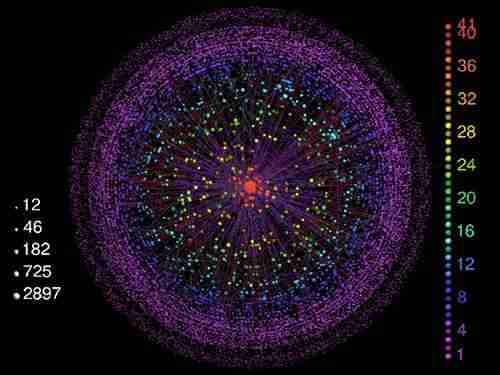 | An honors research project that involved determining whether a set of hostnames belong to the same router, eliminating the need for continous active measurements and making internet cartography less resource-consuming. Research PaperSource |
| PROJECT BLINK | 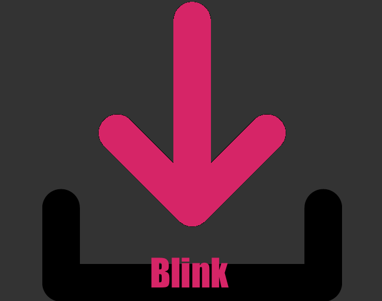 | A published Chrome Extension that enables users to download multiple links at once by drawing a region on the browser. Extension StoreSource |
| PROJECT PYRO | A cross-browser collaborative code-editor with built-in execution that currently supports 7 popular programming languages. DemoSourcev 1.0 | |
| PROJECT APOLLO | 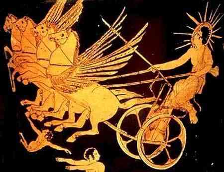 | A finance dictionary tool that defines Wall Street terminologies in laymans-terms, made with a minimalistic design and lightning lookup speed. DemoSource |
| GITHUB DATA CHALLENGE | Examined Github's public data and discovered that repositories linked to HackerNews were 38.15% more popular than the ordinary ones. Read MoreSource | |
| SCRAPING MSN MONEY | A trivial attempt at data mining and analytics inspired by 'Warren Buffet & The Interpretation of Financial Statements', yielding $7k in a virtual stock market game! Read MoreSource | |
| PROJECT DINE | 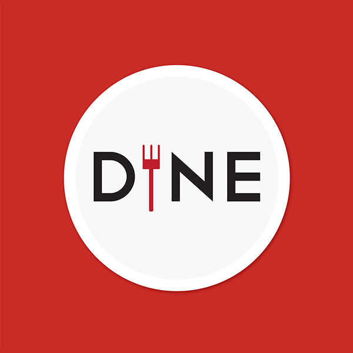 | A 1st-place (class project) iOS 7 application featuring a stunning pictorial menu, a motion-driven meal randomizer, a virtual waiting queue, and Venmo payment. Read MoreSource |
| PROJECT GAMBIT | A random late night project made to automate Bing searches to (unethically) game Bing Rewards. Project intended for educational purposes only... Read MoreSource | |
| PROJECT EULER | Learned Java by solving a series of number theory problems on projecteuler.net. euler.lvtran.com | |
| PIX SNAKE | 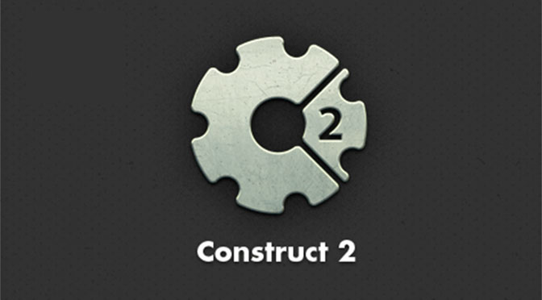 | An attempt at teaching how to make a replica of the classic Snake game as a Microsft Student Partner. Demo |
| MSFT SUMMIT | 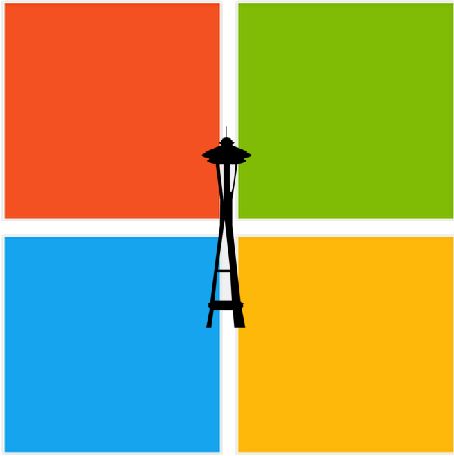 | Got flown to Seattle to attend a summit for top Microsoft Student Partners and shared approaches for technical evangelism with like-minded individuals. Read more |
| QCOM CHALLENGE | Awarded 2nd place in Qualcomm's Entrepreneur Challenge for the best minimum viable product that help customers crowdsource coupons. Read more | |
| HACK UCI | 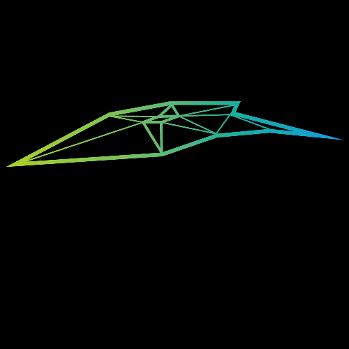 | A wake-up call for my colleagues and I as we failed to deliver our product. Read more |
| LA HACKS | 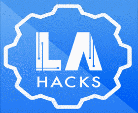 | First 36-hour hackathon where my colleague and I started learning the very basics of mobile development while having some fun with a crude project idea. Read more |
| PHILLIES LEADERSHIP | 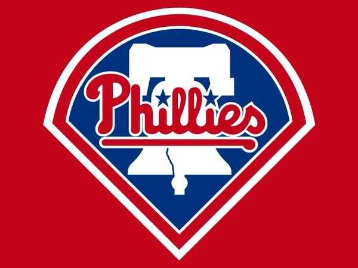 | Learned to be a better leader by surrounding myself with established individuals in Philadelphia. Read more |
| STARTUP WEEKEND | 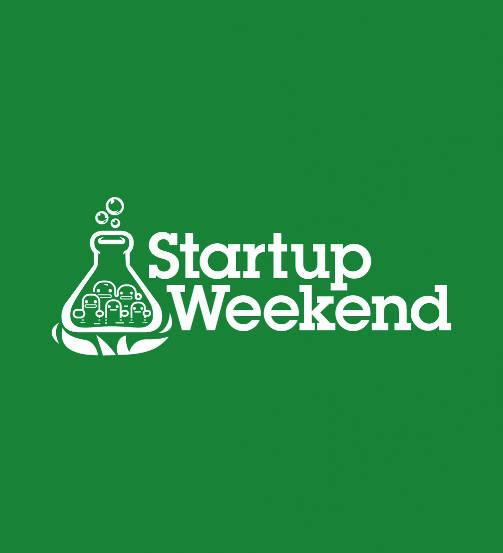 | Awarded 1st place for the best business plan backed with a minimum viable product and customer validation. Read more |
| HACKTIVE | 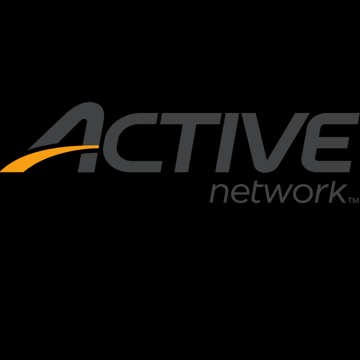 | First ever hackathon where I learned how to step out of my comfort zone. Read more |
| TOHOKU | Spent 2 weeks in Sendai, Japan to learn about top-notch research projects at Tohoku University. Read more |